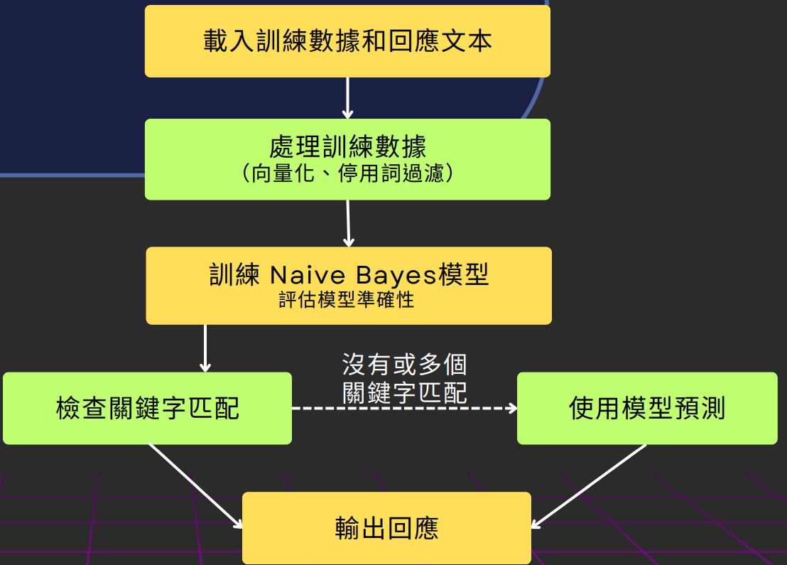
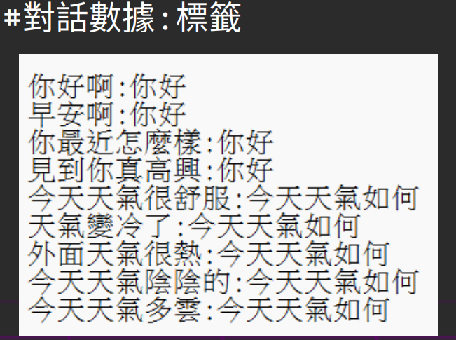
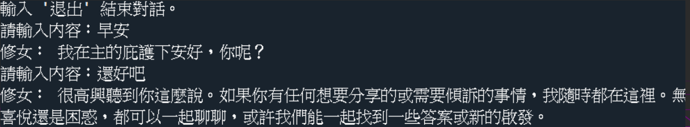

修女對話系統與自然語言理解模組
在本專題中，聊天系統透過自然語言處理（NLP）技術結合校園場景，讓玩家能夠與虛擬角色——修女進行即時互動。此設計不僅提升了劇情沉浸感，更強化玩家與角色之間的情感連結。
聊天系統核心採用 Naive Bayes 模型，因其運算效率高、適合中小型資料訓練，成為我們首選。開發過程中，我們整理大量對話資料，並套用多種文本處理技術，如中文斷詞、停用詞過濾與特徵向量化，以提升模型辨識準確度。資料集以 90% 訓練、10% 測試比例分割，確保系統能穩定輸出適當回應。
下圖為模型處理流程示意圖：
所有對話樣本皆需搭配正確語意標籤，以利模型訓練分類。下圖為實際對話與意圖分類的示意資料：
為避免出現錯誤或不自然的回覆，我們設計容錯機制：當系統無法理解輸入內容時，將回覆「很抱歉，我不太了解你的意思」，提升互動真實感。
以下為修女聊天機器人實際運作之回應範例：
未來，我們計劃擴充語料庫並嘗試導入進階 NLP 架構如 Transformer，使修女角色的語境理解與回應流暢度更貼近真實人類對話。